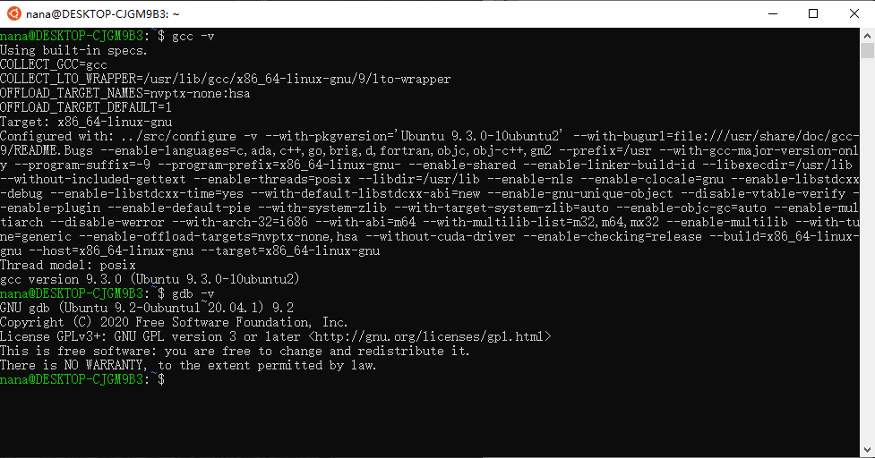
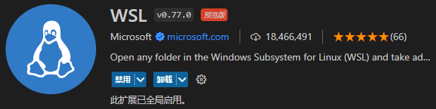
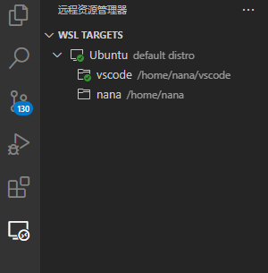
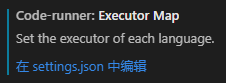

WSL2 安装，gcc + vscode 配置
在 Windows10 下安装 WSL2 与 gcc 环境
安装 WSL2
以管理员身份打开 PowerShell ，运行下列指令。
& wsl --install -d ubuntu
设置完密码后打开 ubuntu ，进入命令行。
安装 gcc / gdb
在 WSL2 中执行安装命令：
$ sudo apt install gcc
$ sudo apt install gdb
完成后检查是否安装成功：
$ gcc -v
$ gdb -v

安装 vscode
官网下载 Windows 版本。
安装 vscode 中的 WSL 插件。

此时在 WSL2 中键入：
$ code .
应当已经可以直接打开 vscode ，此时的 vscode 界面是运行在 Windows 上，实际上连接的是 Linux 系统。

设置 c++17 语法检查和编译条件
在 c_cpp_properties.json 配置文件中添加如下选项：
1 | { |
并在 code-runner Executor Map 设置中设置 g++ 编译条件为 -std=c++17 ：

添加如下 json 代码：
1 | "code-runner.executorMap": { |
即完成。